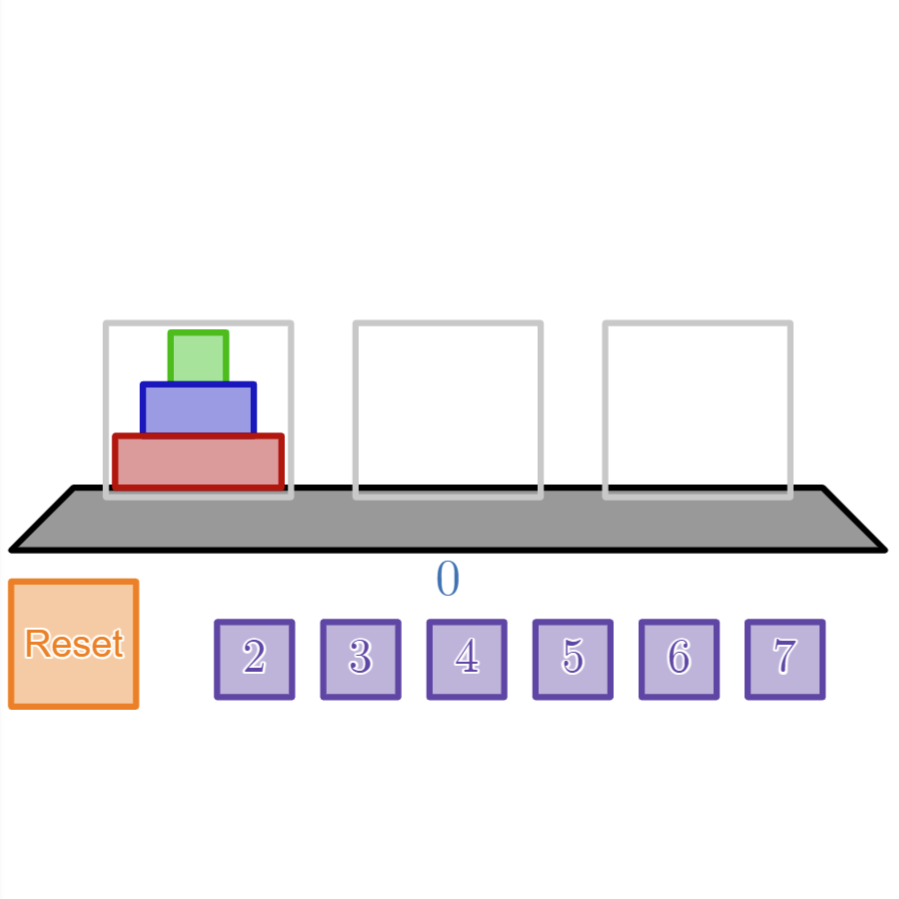

Tower of Hanoi is an old game where a player seeks to move a tower of washers from one peg to another (with three pegs available) subject to the restriction that no washer may ever be placed upon a smaller washer.

Clicking on a gray rectangle around a stack selects that stack (highlighting it in green), and clicking on another gray rectangle attempts to move the top piece of the selected stack to the target stack. The number below the black trapezoid is a timer that starts upon the first player input. The orange button in the bottom left resets the puzzle (and the timer). The numbered purple buttons adjust how many washers are in the initial stack.